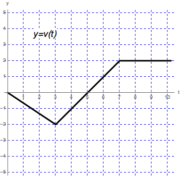

- (a)
- Evaluate the displacement of the particle over the following intervals.
- (i)
- \([0,10]\)
- (ii)
- \([0,7]\)
- (iii)
- \([0,5]\)
- (b)
- When was the particle farthest from the origin? [3]
- (c)
- What was the total distance the particle has travelled over the time interval \([0,10]\)?